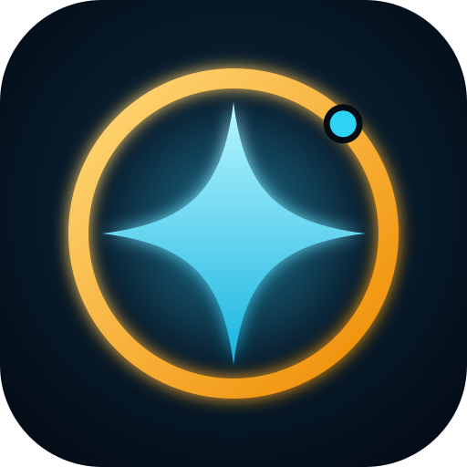

NOVA tek bir sohbet botu değil; her biri bir işte uzman 18 ajandan oluşan bir ekip. İsteğini yazarsın, NOVA doğru ajanı seçer.
Kısayollar: Ctrl+K yazma kutusu · Esc kapat · fare tekerleği bölüm değiştirir.

NOVA Yapay Zeka, Samet Şahin tarafından tasarlanıp geliştirildi. Seni dinleyen, konuşan, hatırlatan ve 18 uzman ajanla çalışan Türkçe bir masaüstü asistanı.
© 2026 Samet Şahin · MIT Lisansı · Hava durumu verisi: Open-Meteo